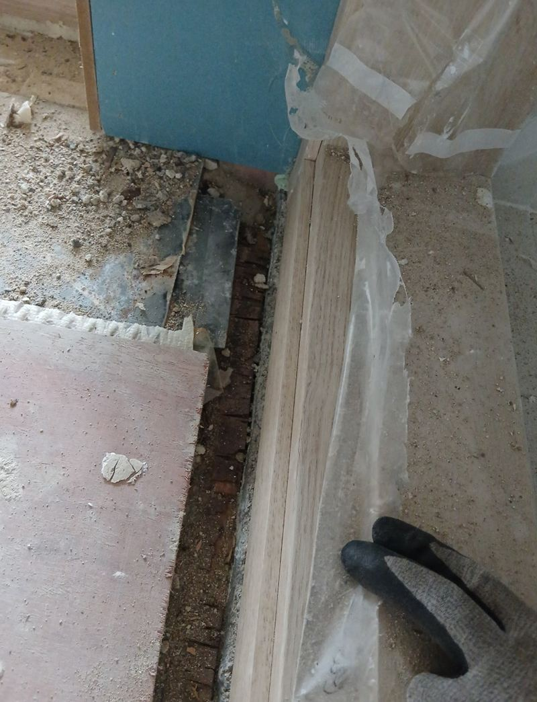
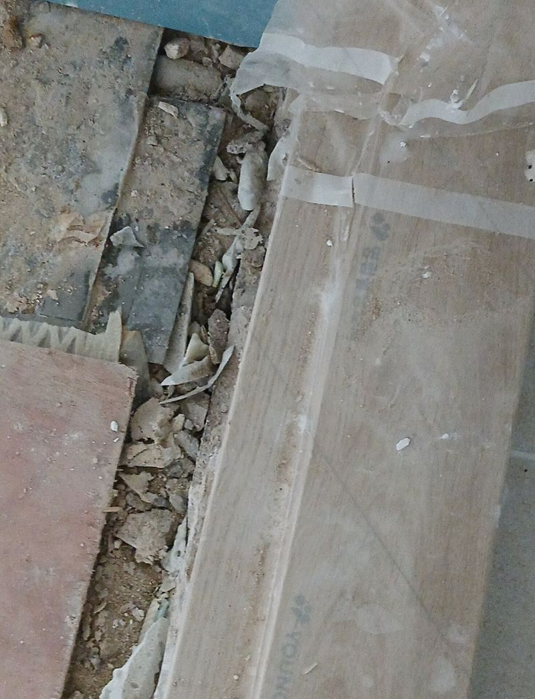
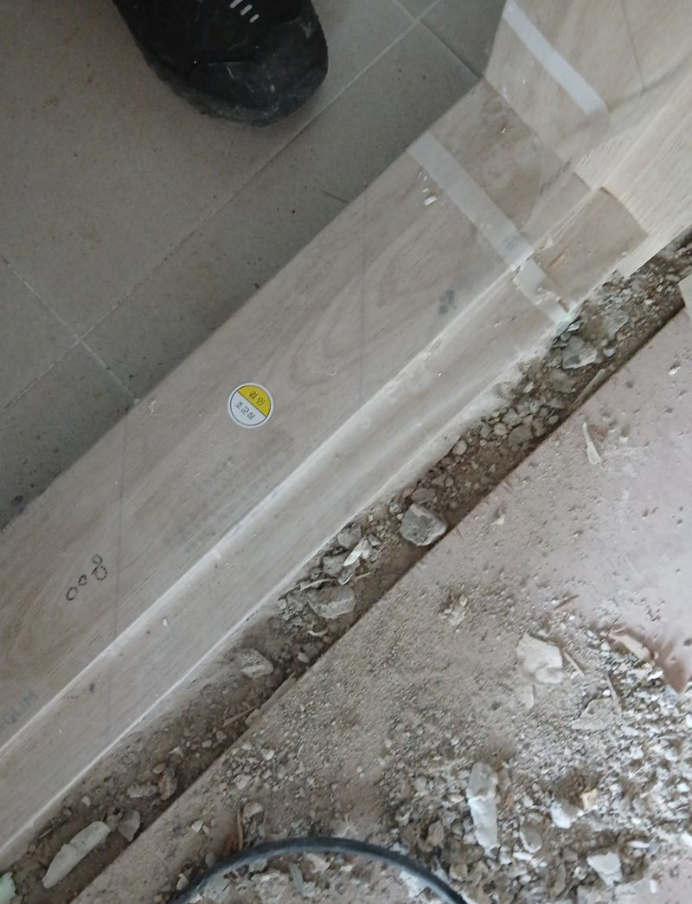
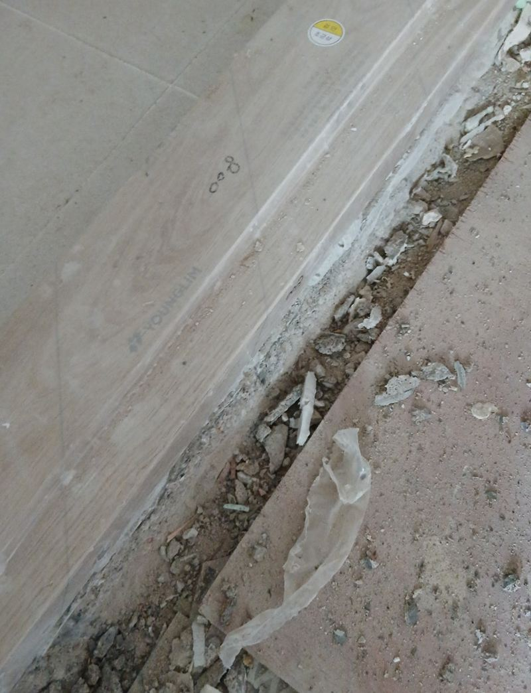
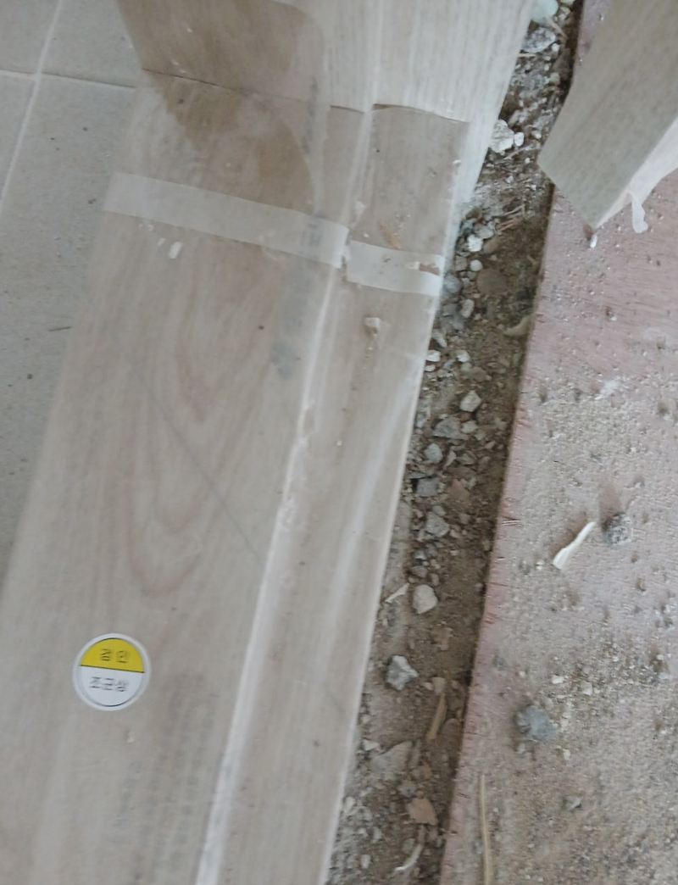
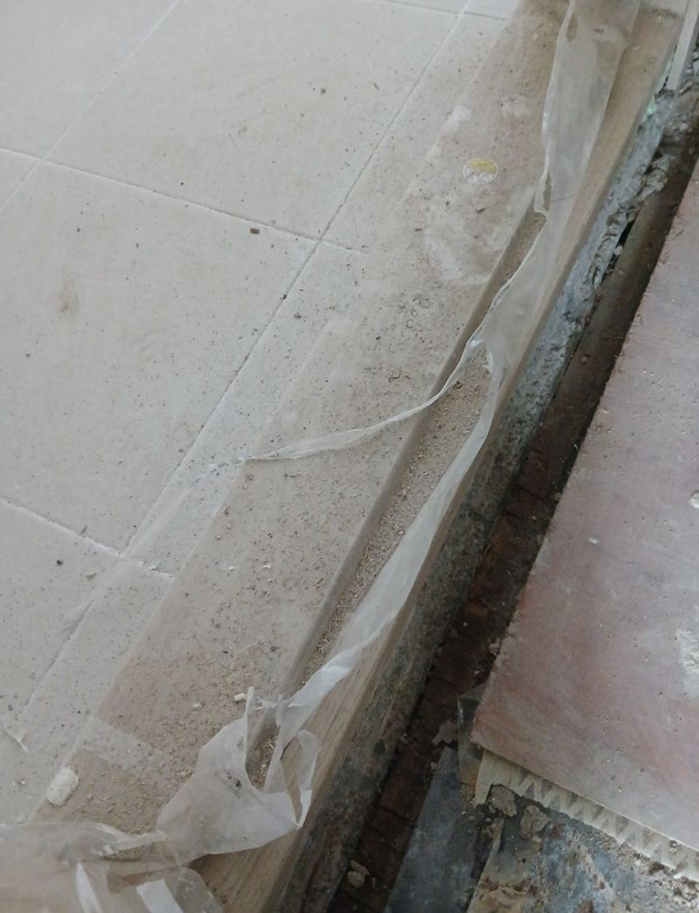

화성 문지방 몰딩 제작 교체 방법과 비용
← 밀어서 전후 비교 →
"리모델링하다가 시공사에서 문지방 쪽을 마무리 못 하고 갔어요. 보기도 안 좋고 로봇청소기도 자꾸 걸려요." 화성 마도면 전원주택이었어요. 방과 방 사이 바닥재가 끝나는 자리에 홈이 패이고 부스러기가 그대로 남아 있었어요. 발끝이 걸리는 높이 차이도 있었고요. 울퉁불퉁한 바닥을 먼저 평탄하게 고른 뒤, 실측해 재단한 몰딩을 붙이고 실리콘으로 틈을 막았어요.
| 현장 | 화성 마도면 전원주택, 방 사이 문지방 자리 |
|---|---|
| 증상 | 리모델링 뒤 마감 누락, 단차와 패인 홈, 로봇청소기 걸림 |
| 한 일 | 현장 확인 → 연마·보수재로 평탄 작업 → 재실측·몰딩 재단 → 접착 부착 → 실리콘 마감 → 문 여닫이·로봇청소기 통과 확인 |
| 범위 | 문은 그대로 두고 문지방 마감만 |
비어 있는 문지방, 그냥 두면 생기는 일
문지방 몰딩은 장식처럼 보이지만, 바닥재가 끝나는 선을 덮고 방과 방의 높이 차이를 이어 주는 역할을 해요. 이게 빠져 있으면 바닥재 끝이 들뜨거나 부서지고, 패인 홈에 먼지가 쌓여요. 맨발로 지나가다 발가락이 걸리기도 하고, 아이나 어르신이 있는 집이면 넘어질 위험도 있어요.


요즘은 로봇청소기 때문에 문의가 더 많아요. 몇 mm만 턱이 져도 청소기가 넘지 못하고 방 앞에서 돌아 나와요. 이 집도 그게 가장 불편하다고 하셨어요.
문지방 몰딩 붙이는 순서
평탄 작업
울퉁불퉁한 바닥을 연마기로 갈고 보수재로 메워 고르게 했어요. 바닥이 고르지 않으면 몰딩이 떠서 시간이 지나며 틈이 벌어져요.


다시 재고 재단
평탄 작업 뒤 높이가 바뀌어서 한 번 더 쟀어요. 길이가 모자라면 틈이 생기고, 길면 문이 닫힐 때 걸려요.

부착과 실리콘
전용 접착제로 붙이고, 양 끝과 바닥이 만나는 선은 방습 실리콘으로 막았어요. 전원주택은 계절마다 습도 차이가 커서 이 마감이 수명을 좌우해요.

문과 청소기로 확인
문을 여러 번 여닫아 걸리는 데가 없는지 보고, 로봇청소기가 넘어가는지도 직접 확인했어요.
문지방 몰딩 비용이 달라지는 것
| 항목 | 확인하는 것 |
|---|---|
| 문지방 개수와 길이 | 몇 곳인지, 문 폭이 얼마인지 |
| 바닥 상태 | 평탄 작업이 얼마나 필요한지 |
| 높이 차이 | 경사형 몰딩이 필요한지 |
| 몰딩 재질·색 | 바닥재와 맞출 색, 기성품으로 되는지 |
문 전체를 바꾸는 것보다 범위가 훨씬 작아서 부담이 적은 편이에요. 고객분은 "리모델링 끝나고도 문지방 때문에 계속 신경 쓰였는데 이제 정리됐다"며 좋아하셨어요.
리모델링 끝나고 자주 남는 마감
- 문지방 몰딩바닥재와 문틀이 만나는 선이 비어 있는 경우가 많아요.
- 걸레받이 끝모서리에서 이음이 벌어지거나 길이가 모자라요.
- 실리콘 마감욕실 앞, 주방 쪽에 틈이 그대로 남아 습기가 들어가요.
문지방 몰딩 질문
문지방을 아예 없앨 수도 있나요?
양쪽 바닥 높이가 비슷하면 낮은 몰딩으로 거의 평평하게 만들 수 있어요. 높이 차이가 크면 경사형을 써요.
나무 문지방이 썩었어요.
썩은 부분을 잘라내고 다른 재질로 바꾸는 작업도 해요. 욕실 앞이라면 대리석을 많이 써요.
바닥재 색과 꼭 맞춰야 하나요?
비슷한 톤을 고르는 게 자연스러워요. 문틀 색에 맞추는 집도 있어요.
몰딩이 들뜨면 다시 붙일 수 있나요?
바닥 상태를 보고 다시 고른 뒤 붙여요. 들뜬 원인이 습기라면 그것부터 잡아요.
문이 바닥에 닿아요.
몰딩 높이 때문에 닿는다면 문 하단을 조금 깎거나 낮은 몰딩으로 바꿔요.
한 곳만 해도 오시나요?
한 곳도 가요. 다른 방 문지방도 함께 보면 한 번에 정리할 수 있어요.
몰딩 대신 대리석으로 할 수 있나요?
욕실 앞처럼 물이 닿는 곳은 대리석이 오래가요. 높이와 폭을 재서 맞춰요.
바닥 공사 중인데 미리 불러도 되나요?
바닥재를 깐 뒤에 하는 게 맞아요. 바닥재 높이가 정해져야 몰딩을 고를 수 있어요.
다른 문지방·문턱 현장
문지방 자리를 위에서, 옆에서 한 장씩 찍어 보내 주세요.
전화 상담 010-4517-9872